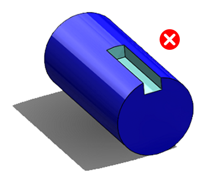
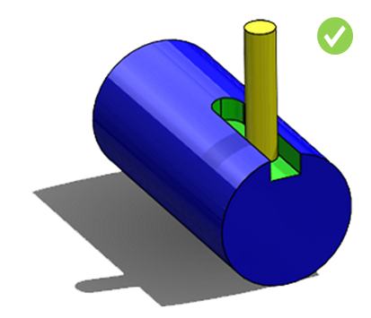
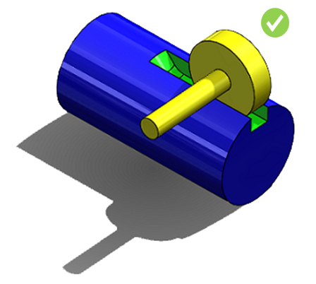

止まりの軸方向キー溝は、切削工具に適合するように端部をR形状（半径付き）にする必要があります。
最も一般的に使用されるキーの種類は、ウッドラフキー（Woodruff key）、丸端の平行キー（round-end machine key）、および角端の平行キー（square-end machine key）です。しかし、角端の平行キーは加工が難しく、コストも高くなります。
端部にRを持つキー溝を加工する場合、エンドミルカッターまたはスロッティングカッター（slotting cutter）を使用してキー溝を準備します。これは他の加工方法よりも高速です。
キー溝の端部には、R形状（半径付き）のキー溝を採用することが推奨されます。
R形状のキー溝は、キーの丸端（またはキーの端部）がキー溝の端部に適合するように、エンドミルカッターで加工する必要があります。カッターの直径は常にキーの幅と同一である必要があります。
本ルールは、キー溝がR形状（半径付き）であるかどうかをチェックします。そのため、構成情報は不要です。
端部が角形状の止まりキー溝は、フライス加工で実現するのが非常に困難です。

キー溝の端部は、切削工具（例：エンドミルカッター）に適合するようにR形状にすべきです。

キー溝の端部が、キー溝加工としてより高速な方法であるスロッティングカッターで切削できるようなR形状になっていると、さらに望ましいです。

注:
キー溝の定義 -
幅／直径（W/D）比は 0.3 以下である必要があります。
高さ／幅（H/W）比は 1.0 以下である必要があります。
ここで、
D = 軸の直径（Diameter of Shaft）
H = キー溝の深さ（Depth of Keyways）
W = キー溝の幅（Width of Keyways）